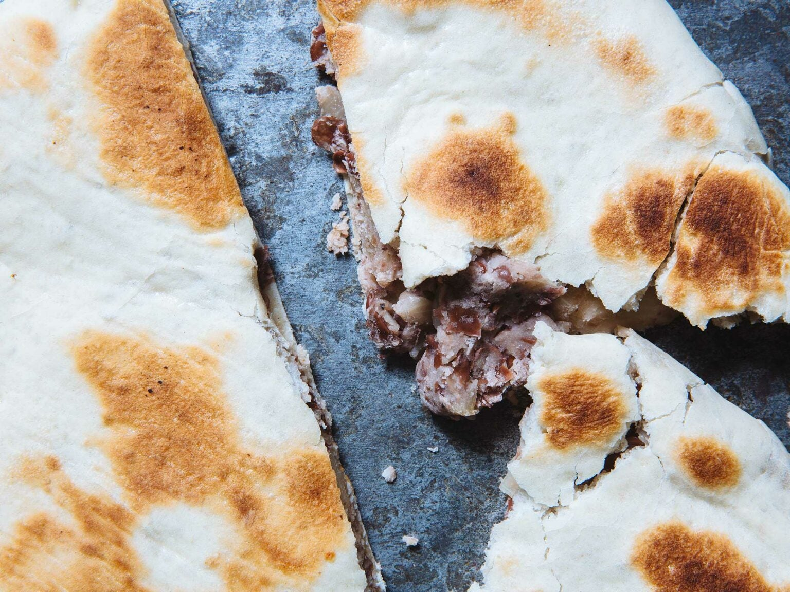

Lobiani
Description
This bean-filled Georgian flatbread is traditionally eaten at Barbaroba, the feast of St. Barbara. It is often a bit smokey from the addition of a bit of smoked pork. Bacon fat gives a similar effect in half the time, but feel free to swap it out for butter or olive oil and a few drops of liquid smoke for a vegetarian version.
Ingredients
For the filling
- 2 cups dried kidney beans (14 oz.)
- 1⁄4 cup bacon fat or olive oil
- 2 cups diced yellow onion (10 oz.)
- 1 tsp. ground coriander seeds
- 1 1⁄2 tsp. paprika
- 1 tbsp. kosher salt
For the dough
- 3⁄4 tsp. instant dry yeast
- 2 tsp. sugar
- 4 1⁄2 cups all-purpose flour, plus more for dusting
- 2 tsp. kosher salt
- olive oil, for greasing
Steps
- Prepare the beans: Add the beans to a medium bowl or pot and cover with water by at least 2 inches; let soak about 8 hours or overnight, then drain.
- Make the filling: In a large pot, melt the bacon fat over medium heat. Add the onions and cook, stirring occasionally, until softened and lightly browned, 20-25 minutes. Stir in the coriander and paprika and cook until fragrant, 2-3 minutes. Add the drained beans, salt, and enough water to cover the solids by 3 inches; bring to a boil, then lower the heat to simmer. Cook, stirring occasionally, until the beans are very tender, 50-60 minutes.
- Set a large colander over a large bowl, then drain the beans and reserve the cooking liquid.
- Return the beans to the pot and use a potato masher or a large fork to smash the mixture to a coarse paste, adding up to a few tablespoons of the reserved liquid if the mixture seems too dry. Taste and adjust the seasoning as needed.
- Turn the bean mixture out into a large shallow pan or baking sheet, and let cool to room temperature.
- Meanwhile, make the dough: Lightly oil a large bowl with olive oil and set aside. In the clean bowl of a stand mixer fitted with a dough hook, combine the yeast, sugar,1 ½ cups of tepid water, the flour, and the salt. Mix on low speed until the dry ingredients are completely hydrated, 2-3 minutes, then increase the speed slightly and mix until a smooth, firm dough forms, 2-3 minutes.
- Transfer the dough to the oiled bowl and cover the bowl with a lid or plastic wrap. Set in a warm place until the dough almost doubled in size, 50-60 minutes.
- Use a bench scraper or knife to divide the dough into five equal pieces (about 6 ounces each). Loosely shape each into a ball and cover with a clean towel to prevent from drying out.
- On a lightly floured work surface using a rolling pin, roll out one ball of dough into a 10-inch round. Place a generous half cup of the cooled bean filling into the center of the round, then fold and stretch the edges up to meet at the center. Pleat and pinch the dough to create a tidy center knot. Press the bundle down gently and carefully roll it down to an even, 7-inch disk. Pop any pockets of trapped air with a skewer or the tip of a sharp knife and set the lobiani back under the towel. Repeat with the remaining 4 disks and the rest of the filling, re-flouring the work surface as needed
- Heat a large griddle or cast iron skillet over medium-high heat until hot. Add as many lobiani as will fit in a single layer without crowding or overlapping. Cook on one side until the breads are well browned and lightly charred in some places, 3-4 minutes. Using a wide spatula, turn and repeat on the remaining side.
- Serve immediately, or remove the breads to a baking sheet and cover with a dry towel as you repeat with the remaining breads.